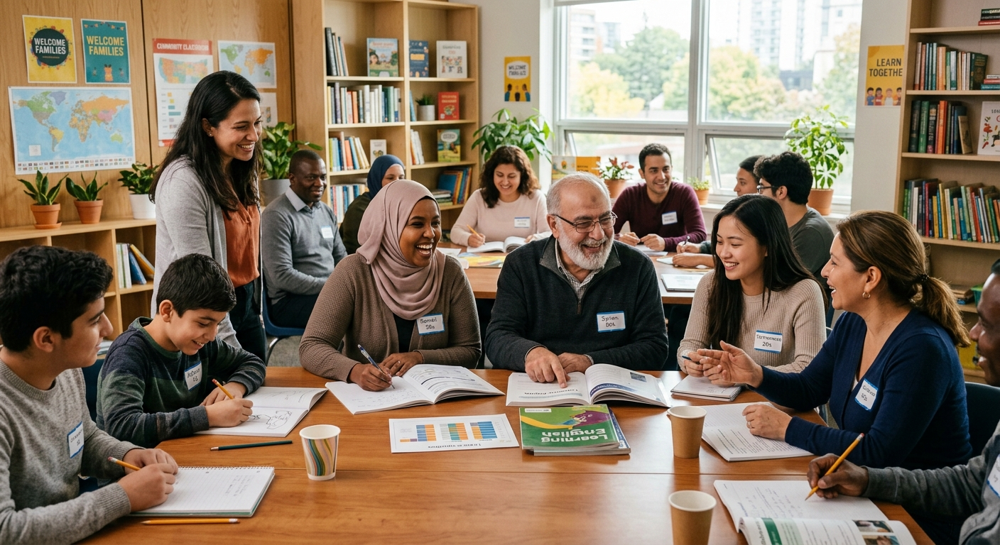
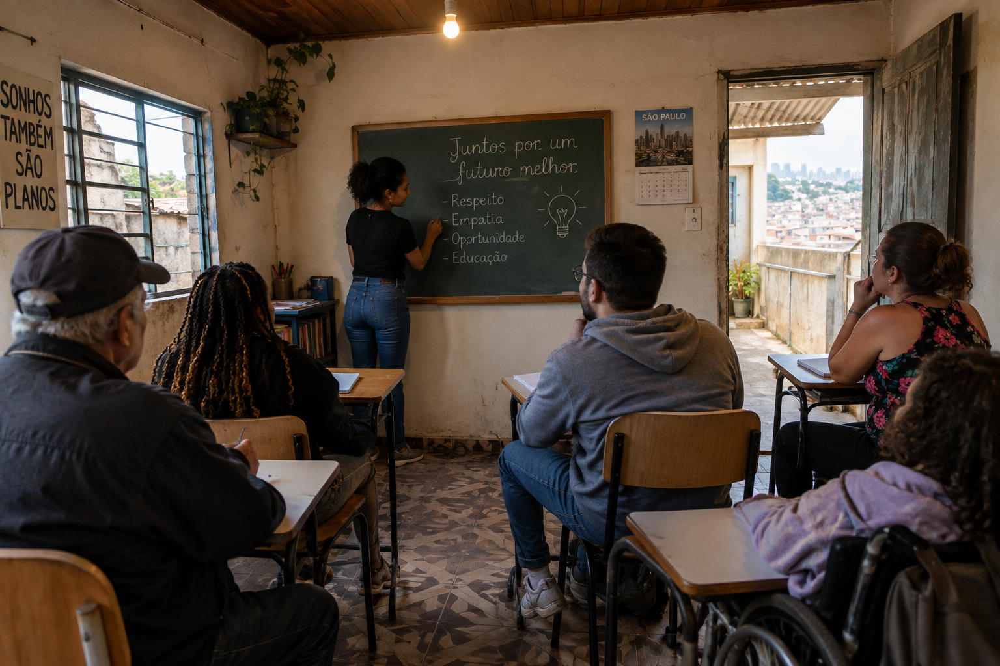
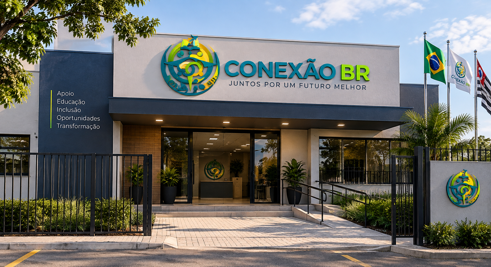
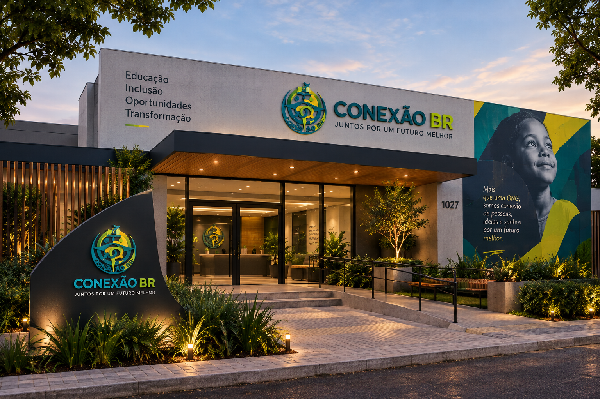
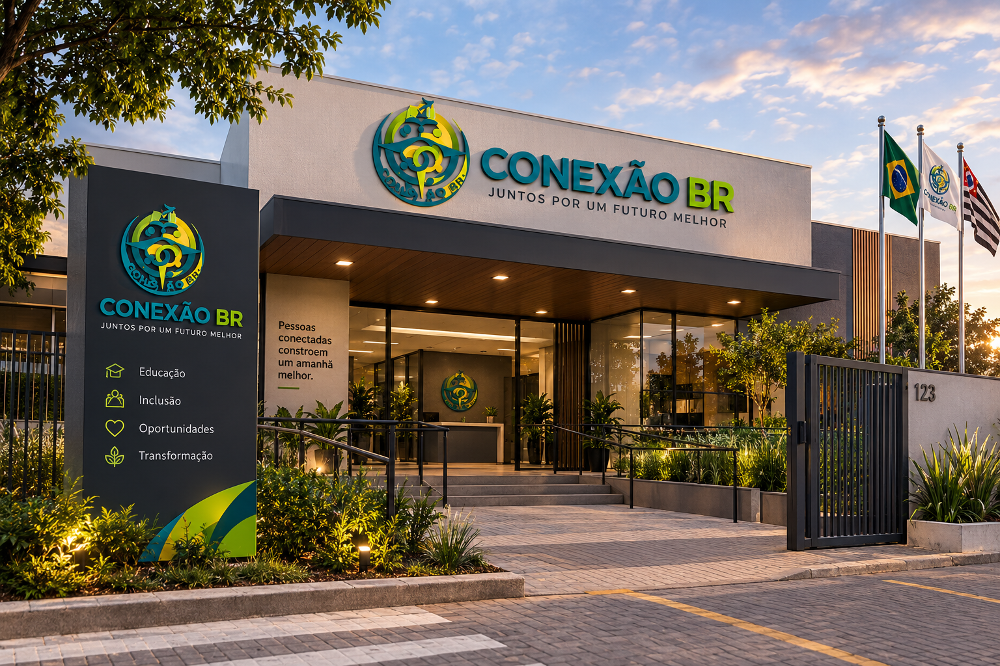

Sobre Nós
Na Conexão BR, acreditamos que a educação é a ferramenta mais poderosa para transformar vidas e construir uma sociedade justa, acolhedora e igualitária.
Nossa ONG atua no acolhimento e no desenvolvimento de imigrantes, refugiados e pessoas em situação de vulnerabilidade socioeconômica, oferecendo oportunidades reais de aprendizado, autonomia e inclusão social.
Também trabalhamos para aproximar pessoas de diferentes culturas, histórias e origens, promovendo o respeito à diversidade, a solidariedade e a convivência. Na Conexão BR, cada pessoa é acolhida com respeito e encontra um espaço para aprender, compartilhar experiências e construir novas possibilidades para o futuro.
"Conectar pessoas. Transformar oportunidades. Construir um Brasil mais inclusivo."
Nossa Missão
Promover educação, inclusão e oportunidades para imigrantes, refugiados e pessoas em situação de vulnerabilidade socioeconômica, contribuindo para sua autonomia, integração social e acesso a direitos.
Nossa Visão
Ser uma organização reconhecida por transformar vidas por meio da educação, do acolhimento e da inclusão, contribuindo para a construção de uma sociedade mais justa, diversa e igualitária.
Nossos Valores
Inclusão
Acreditamos que todas as pessoas devem ter oportunidades de participar plenamente da sociedade.
Educação
Acreditamos no conhecimento como instrumento de transformação e autonomia.
Transparência
Buscamos atuar de forma responsável e clara na utilização dos recursos e na realização de nossas ações.
Respeito
Valorizamos as diferentes culturas, histórias, identidades e trajetórias.
Dignidade
Trabalhamos para que cada pessoa seja tratada com respeito e tenha seus direitos reconhecidos.
Diversidade
Entendemos as diferenças como parte essencial de uma sociedade mais rica e humana.
Nossa História
A Conexão BR nasceu com o propósito de aproximar pessoas e criar oportunidades para aqueles que enfrentam dificuldades de acesso à educação, informação e inclusão social. A organização surgiu a partir da percepção de que imigrantes, refugiados e famílias em situação de vulnerabilidade podem encontrar diversos obstáculos durante seu processo de adaptação e desenvolvimento.

Sedes

Matriz
Localizada em São Paulo
Rua Inventada, 555
Projetos

Sede em Pernambuco
Localizada em Recife
Avenida Principal, 000
Projetos

Sede em Manaus
Localizada em Manaus
Rua Qualquer Nome, 1010
Projetos

Sede em Distrito Federal
Localizada em Brasília
Rua das Palmeiras, 5432
Projetos